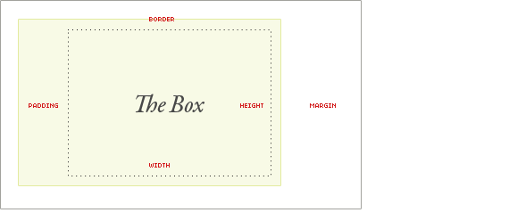

"Careful control of whitespace is among a designer's most important tools," according to one World Wide Web Consortium author. Margins, borders, and padding all add up to determine the position of an element in respect to other elements on a web page.
The margin creates space around an element, while padding makes space between element content and its border. The border literally forms the border around an element, which can be set to different styles, colors, and widths.
Together the margin, border, and padding comprise the box model:
The margin, border, and padding are all additive. This means that the final width or height of an element will equal the margin + border + padding + (width|height).